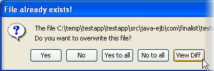
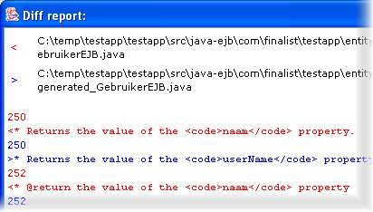

You can open an existing application file by choosing the menu File > Open, or by choosing an existing file from the dialogue opened by clicking the button on the toolbar.
The application will be loaded back into JAG, and then further changes can be made - adding or deleting entities, editing entity fields and relations, and adding or removing entities from services.
If you choose to re-generate the application 'on top of' an existing JAG application, JAG will deal with this in an intelligent manner.
Before writing a file into the project, it will sense if a previous version already exists and if so, prompt you for a suitable action.
|  |
From the available options, you can choose to overwrite the existing file or keep the old version. But in order to make that decision, it
often helps to see what the changes are. You can do this by selecting the default 'View diff' option, an example of which you can see below.
|  |
naam' to 'userName': the file being 'diffed' is the
resultant entity Java class. For the sake of clarity, lines from the newly generated file are shown in blue, and corresponding lines
from the old file in red.